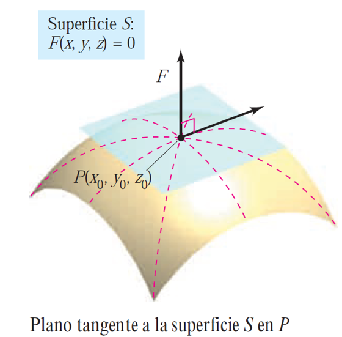
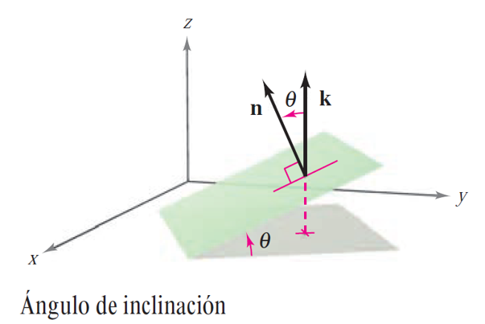

Plano tangente y recta normal
Contents
3.4. Plano tangente y recta normal#
3.4.1. Plano tangente a una superficie#
Comenzamos esta sección abordando el problema de encontrar el plano tangente a una superficie \(S\) en un punto de la misma \(P=(x_0,y_0,z_0)\). Para ello, consideramos la representación más general de una superficie dada por una ecuación de la forma
De esta manera general, la superficie \(S\) se puede ver como la superficie de nivel \(0\) de \(F\),
Además, consideramos una curva \(C\) contenida en la superficie \(S\) y que pasa por \(P\) definida por la función de valores vectoriales \(\mathbf{r}(t)=x(t)\mathbf{i}+y(t)\mathbf{j}+z(t)\mathbf{k}\) como sigue
siendo \(P=\mathbf{r}(t_0)=(x(t_0),y(t_0),z(t_0))\) para un \(t_0\in\mathbb{R}\). Entonces,
para todo \(t\in \mathbb{R}\). Derivamos la ecuación anterior respecto a \(t\) aplicando la regla de la cadena y asumiendo que \(F\) es difereciable, y que \(x(t)\), \(y(t)\) y \(z(t)\) son derivables, y obtenemos
para todo \(t\in \mathbb{R}\). En \(t=t_0\), la forma vectorial equivalente es la siguiente,
Este resultado significa que, en el punto \(P\), el gradiente de \(F\) es ortogonal al vector tangente de cada curva contenida en \(S\). Por lo tanto, todas las rectas tangentes a \(S\) en \(P\), se encuentran en un plano que es normal al vector gradiente de \(F\) en \(P\), \(\nabla F(x_0,y_0,z_0)\), y que contiene al punto \(P=(x_0,y_0,z_0)\), como se muestra en la figura.
{kind=link}
3.4.2. Plano tangente y recta normal a una superficie#
Definition (Plano tangente y recta normal )
Sea \(F\) una función escalar de tres variables diferenciable en un punto \(P=(x_0,y_0,z_0)\) de la superficie dada por \(F(x,y,z)=0\) tal que \(\nabla F(x_0,y_0,z_0)\neq \mathbf{0}\).
Al plano que pasa por \(P\) y es normal a \(\nabla F(x_0,y_0,z_0)\) se le llama plano tangente a \(S\) en \(P\).
A la recta que pasa por \(P\) y tiene la dirección de \(\nabla F(x_0,y_0,z_0)\) se le llama recta normal a \(S\) en \(P\).
La ecuación del plano tangente a \(S\) en \(P=(x_0,y_0,z_0)\) se deduce inmediatamente teniendo en cuenta que \(P\) pertenece al plano y que \(\nabla F(x_0,y_0,z_0)\) es normal a dicho plano (ortogonal a cada vector en el plano). En efecto, dado \((x,y,z)\) un punto arbitrario en el plano, se tiene que el vector que une dicho punto y \(P\)
se encuentra en el plano tangente, y por tanto es ortogonal a \(\nabla F(x_0,y_0,z_0)\), es decir, se tiene
que conduce al siguiente teorema.
Theorem (Ecuación del plano tangente )
Sea \(F\) una función escalar de tres variables diferenciable en un punto \(P=(x_0,y_0,z_0)\) de la superficie dada por \(F(x,y,z)=0\) tal que \(\nabla F(x_0,y_0,z_0)\neq \mathbf{0}\). Entonces,
La ecuación del plano tangente a dicha superficie en \((x_0,y_0,z_0)\) es
Las ecuaciones paramétricas de la recta normal a la superficie en \((x_0,y_0,z_0)\) son
Nótese que, la gráfica de una función de dos variables, es decir, una superficie de la forma \(z=f(x,y)\), se puede convertir a la forma general definiendo \(F\) como
Entonces, por el teorema anterior se tiene que, si \(f\) es diferenciable, el plano tangente a la gráfica de \(f\) en el punto \((x_0,y_0,z_0)=(x_0,y_0,f(x_0,y_0))\) es
En este punto, conviene señalar que el concepto de diferenciabilidad está relacionado con la existencia del plano tangente. En concreto, para una función de dos variables, dicho concepto permite establecer el plano tangente como aproximación lineal de la gráfica de la función, de la misma manera que el concepto de derivabilidad permite introducir la recta tangente como aproximación lineal de la gráfica de una función de variable real.
3.4.3. Ángulo de inclinación#
Definition (Ángulo de inclinación de un plano)
El ángulo de inclinación de un plano se define como el ángulo \(\theta\) (\(0\leq \theta \leq \pi/2\)) entre el plano dado y el plano \(XY\), como se muestra en la figura. Puesto que el vector \(\mathbf{k}\) es normal al plano \(XY\), se puede utilizar la fórmula del coseno del ángulo entre dos vectores para concluir que el ángulo de inclinación de un plano con vector normal \(\mathbf{n}\) es
siendo \(0\leq \theta \leq \pi/2\).
{kind=link}
Nótese que otro uso del gradiente es determinar el ángulo de inclinación del plano tangente a una superficie como se indica en la siguiente observación.
Remark
Sea \(F\) una función escalar de tres variables diferenciable en un punto \(P=(x_0,y_0,z_0)\) de la superficie dada por \(F(x,y,z)=0\) tal que \(\nabla F(x_0,y_0,z_0)\neq \mathbf{0}\). Entonces, el ángulo de inclinación del plano tangente a dicha superficie en \(P=(x_0,y_0,z_0)\) es
siendo \(0\leq \theta \leq \pi/2\).
3.4.4. Cálculo y representación del plano tangente y de la recta normal con Python#
Consideramos a continuación el problema de encontrar el plano tangente y la recta normal a la superficie \(z=f(x,y)=x^2+y^2+3\) en el punto \((x_0,y_0,z_0)=(1,1/2,f(1,1/2))\), que resolvemos, en Python, aplicando los resultados expuestos. En primer lugar, importamos los módulos necesarios teniendo en cuenta que usaremos Matplotlib para la representación gráfica.
import sympy as sp
import numpy as np
import matplotlib
import matplotlib.pyplot as plt
%matplotlib inline
x, y, z, t = sp.symbols('x y z t', real=True) # definimos las variables simbólicas
f = sp.Lambda((x,y), x**2+y**2+3)
x0 = 1; y0=1/2; z0=f(x0,y0)
# Cálculo de la ecuación del plano tangente
F = sp.Matrix([z-f(x,y)])
grad_F = F.jacobian([x,y,z]).transpose()
grad_fun = sp.Lambda((x,y,z),(grad_F[0,0],grad_F[1,0],grad_F[2,0]))
n = grad_fun(x0,y0,z0) # vector perpendicular al plano
plano_tang = sp.solve(sp.Eq(n[0]*(x-x0)+n[1]*(y-y0)+n[2]*(z-z0),0),z)[0]
# Cálculo de la ecuación vectorial de la recta normal
recta_norm = sp.Lambda(t,(x0+t*n[0], y0+t*n[1], z0+t*n[2]))
Una vez calculado el plano tangente y la recta normal, se traslada la información del módulo Sympy a Numpy, para un uso posterior en Matplotlib:
f_n = sp.lambdify((x,y),f(x,y),"numpy") # función numpy con la expresión de f(x,y)
Plano_tang = sp.lambdify((x,y),plano_tang,"numpy")
Recta_norm = sp.lambdify(t,recta_norm(t),"numpy")
Ahora se pueden usar las funciones de Numpy para la representación gráfica del plano tangente y la recta normal:
from mpl_toolkits.mplot3d import axes3d
# Nube de puntos para representar la superficie y el plano
N = 50
x = np.linspace(-2, 2, N)
y = np.linspace(-2, 2, N)
X, Y = np.meshgrid(x, y)
fval = f_n(X,Y)
Pval = Plano_tang(X,Y)
# Conjunto de puntos para representar la recta normal
tvec = np.linspace(-2, 2, 100)
Rval = Recta_norm(tvec)
# Creación de la figura 3D
fig = plt.figure()
ax = plt.axes(projection="3d")
# Representación de la superficie z=f(x,y), el plano tangente y la recta normal
surf_F = ax.plot_surface(X, Y, fval)
surf_Plano = ax.plot_surface(X, Y, Pval)
recta = ax.plot3D(*Rval)
# Etiquetas de los ejes
ax.set_xlabel('x')
ax.set_ylabel('y')
ax.set_zlabel('z')
# Punto de vista del observador: elevación, ángulo azimutal
ax.view_init(elev=10, azim=-100)
ax.auto_scale_xyz([-2,2],[-2,2],[-5,10])
plt.show()
Por último, calculamos el ángulo de inclinación del plano tangente calculado:
angulo=np.arccos(np.abs(n[2])/(np.linalg.norm(n)))
display('Ángulo de inclinación del plano tangente:',angulo)
---------------------------------------------------------------------------
AttributeError Traceback (most recent call last)
AttributeError: 'Float' object has no attribute 'sqrt'
The above exception was the direct cause of the following exception:
TypeError Traceback (most recent call last)
~\AppData\Local\Temp\ipykernel_10632\3773599388.py in <module>
----> 1 angulo=np.arccos(np.abs(n[2])/(np.linalg.norm(n)))
2 display('Ángulo de inclinación del plano tangente:',angulo)
<__array_function__ internals> in norm(*args, **kwargs)
~\anaconda3\lib\site-packages\numpy\linalg\linalg.py in norm(x, ord, axis, keepdims)
2529 else:
2530 sqnorm = dot(x, x)
-> 2531 ret = sqrt(sqnorm)
2532 if keepdims:
2533 ret = ret.reshape(ndim*[1])
TypeError: loop of ufunc does not support argument 0 of type Float which has no callable sqrt method